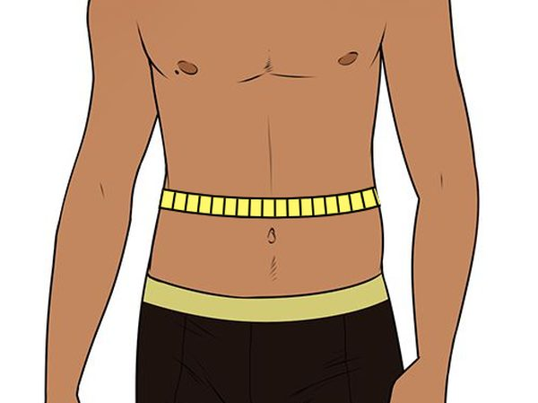
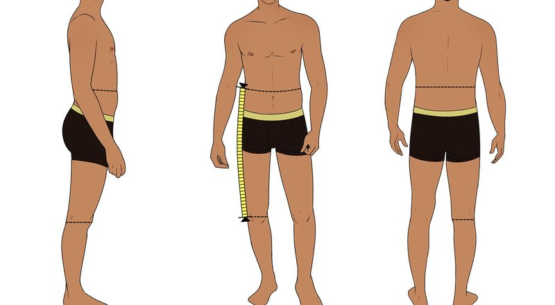
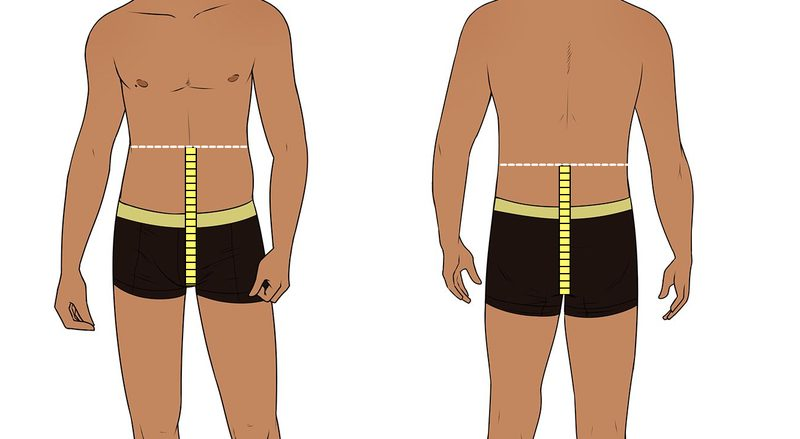
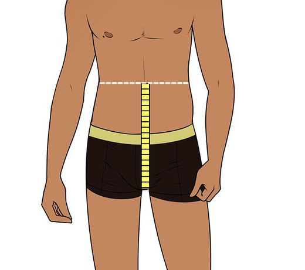
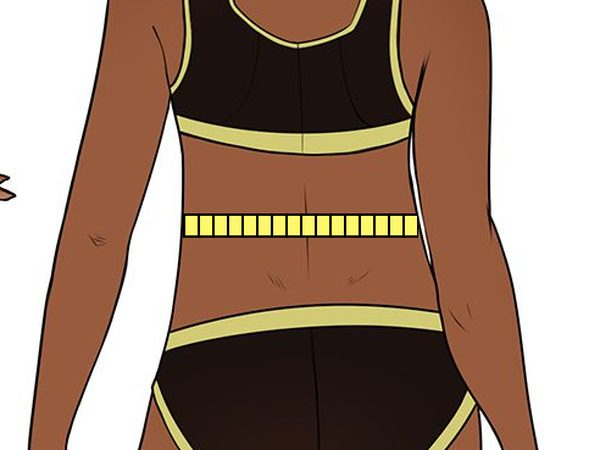
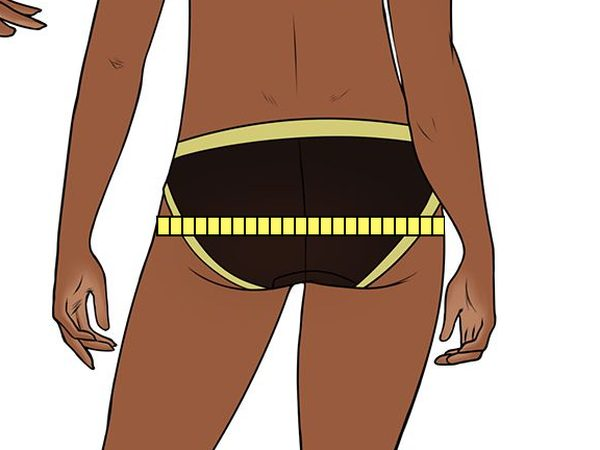
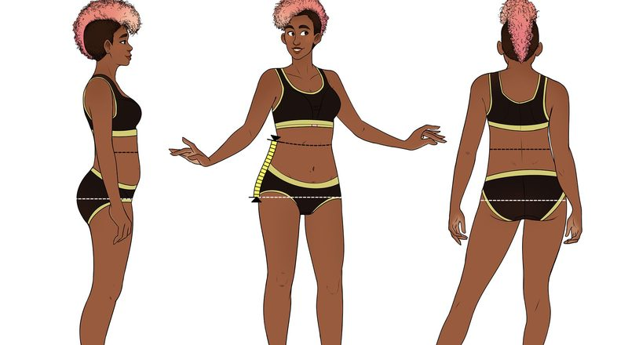
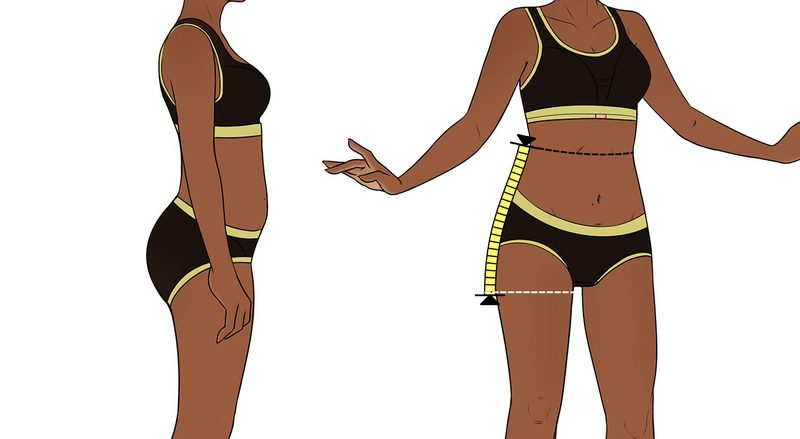
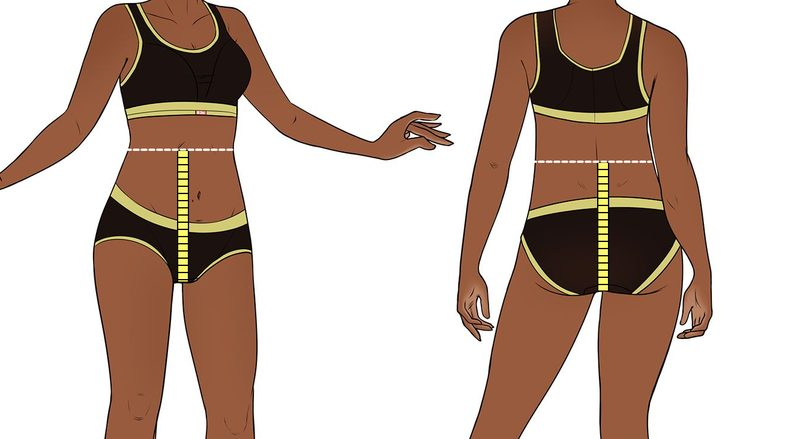

Taking your measurements
The form is pre-filled from the size chart below: all nine measurements for each size and height are listed.
| Size | Waist circumference | Waist, back part | Seat circumference | Seat, back part | Waist to seat | Waist to upper leg | Waist to knee | Cross seam length | Cross seam, front part |
|---|---|---|---|---|---|---|---|---|---|
| Height Short (170 cm) | |||||||||
| 44 | 76 | 38.5 | 97 | 53.5 | 25.5 | 32.5 | 61 | 81 | 38 |
| 46 | 80 | 40.5 | 101 | 55.5 | 25.5 | 32.5 | 61 | 83 | 39 |
| 48 | 84 | 42.5 | 105 | 57.5 | 26 | 32.5 | 61 | 85 | 40 |
| 50 | 88 | 44.5 | 109 | 60 | 26 | 32.5 | 61 | 87 | 41 |
| 52 | 92 | 46.5 | 113 | 62 | 26 | 32.5 | 61 | 89 | 42 |
| 54 | 98 | 49.5 | 119 | 65.5 | 26.5 | 32.5 | 61 | 92 | 43 |
| 56 | 104 | 52.5 | 124 | 68 | 26.5 | 32.5 | 61 | 94.5 | 44.5 |
| 58 | 110 | 55.5 | 129 | 71 | 27 | 32.5 | 61 | 97 | 45.5 |
| 60 | 116 | 58.5 | 134 | 73.5 | 27 | 32.5 | 61 | 99.5 | 47 |
| 62 | 122 | 61.5 | 138.5 | 76 | 27 | 32.5 | 61 | 102 | 48 |
| Height Average (178 cm) | |||||||||
| 44 | 76 | 38.5 | 97 | 53.5 | 27 | 34 | 64 | 85 | 40 |
| 46 | 80 | 40.5 | 101 | 55.5 | 27 | 34 | 64 | 87 | 41 |
| 48 | 84 | 42.5 | 105 | 57.5 | 27 | 34 | 64 | 89 | 42 |
| 50 | 88 | 44.5 | 109 | 60 | 27.5 | 34 | 64 | 91 | 43 |
| 52 | 92 | 46.5 | 113 | 62 | 27.5 | 34 | 64 | 93 | 44 |
| 54 | 98 | 49.5 | 119 | 65.5 | 27.5 | 34 | 64 | 96 | 45 |
| 56 | 104 | 52.5 | 124 | 68 | 28 | 34 | 64 | 98.5 | 46.5 |
| 58 | 110 | 55.5 | 129 | 71 | 28 | 34 | 64 | 101 | 47.5 |
| 60 | 116 | 58.5 | 134 | 73.5 | 28.5 | 34 | 64 | 103.5 | 49 |
| 62 | 122 | 61.5 | 138.5 | 76 | 28.5 | 34 | 64 | 106 | 50 |
| Height Tall (186 cm) | |||||||||
| 44 | 76 | 38.5 | 97 | 53.5 | 28 | 35.5 | 67 | 88.5 | 41.5 |
| 46 | 80 | 40.5 | 101 | 55.5 | 28 | 35.5 | 67 | 90.5 | 42.5 |
| 48 | 84 | 42.5 | 105 | 57.5 | 28.5 | 35.5 | 67 | 92.5 | 43.5 |
| 50 | 88 | 44.5 | 109 | 60 | 28.5 | 35.5 | 67 | 94.5 | 44.5 |
| 52 | 92 | 46.5 | 113 | 62 | 28.5 | 35.5 | 67 | 96.5 | 45.5 |
| 54 | 98 | 49.5 | 119 | 65.5 | 29 | 35.5 | 67 | 99.5 | 46.5 |
| 56 | 104 | 52.5 | 124 | 68 | 29 | 35.5 | 67 | 102 | 48 |
| 58 | 110 | 55.5 | 129 | 71 | 29.5 | 35.5 | 67 | 104.5 | 49 |
| 60 | 116 | 58.5 | 134 | 73.5 | 29.5 | 35.5 | 67 | 107 | 50 |
| 62 | 122 | 61.5 | 138.5 | 76 | 30 | 35.5 | 67 | 109 | 51 |
Size numbers are French sizes; the measurements follow the European standard grid for clothing sizes.
These standard sizes describe an average figure, and few people match them exactly. So you can correct each measurement: the more you correct, the more made-to-measure the shorts will be.
You need a tape measure, a piece of string, ideally another person to help, and about 10 minutes. The measurements marked “check” matter most.
For men
Nine measurements are enough. Take them on yourself or on the person concerned, in underwear or very thin clothes, with the tape flat against the body, without pulling it tight.
Check first: waist circumference, seat circumference, waist to upper leg, cross seam length.
The form is pre-filled from the size chart below: all nine measurements for each size and height are listed.
| Size | Waist circumference | Waist, back part | Seat circumference | Seat, back part | Waist to seat | Waist to upper leg | Waist to knee | Cross seam length | Cross seam, front part |
|---|---|---|---|---|---|---|---|---|---|
| Height Petite (160 cm) | |||||||||
| 34 | 64 | 32.5 | 88 | 45.5 | 23 | 26 | 57 | 64.5 | 32 |
| 36 | 68 | 34.5 | 92 | 47.5 | 23 | 26.5 | 57 | 66.5 | 33 |
| 38 | 72 | 36.5 | 96 | 49.5 | 23.5 | 27 | 57 | 68.5 | 34 |
| 40 | 76 | 38.5 | 100 | 51.5 | 23.5 | 27 | 57 | 70.5 | 35 |
| 42 | 80 | 40.5 | 104 | 53.5 | 24 | 27.5 | 57 | 72.5 | 36 |
| 44 | 84 | 42.5 | 108 | 55.5 | 24.5 | 28 | 57 | 74.5 | 37 |
| 46 | 88 | 44.5 | 112 | 57.5 | 24.5 | 28 | 57 | 76.5 | 38 |
| 48 | 94 | 47.5 | 117 | 60.5 | 25 | 28.5 | 57 | 79 | 39 |
| 50 | 100 | 50.5 | 122 | 63 | 25.5 | 29 | 57 | 81.5 | 40.5 |
| 52 | 106 | 53.5 | 127 | 65.5 | 26 | 29.5 | 57 | 84 | 41.5 |
| Height Average (168 cm) | |||||||||
| 34 | 64 | 32.5 | 88 | 45.5 | 24 | 27.5 | 60 | 68 | 34 |
| 36 | 68 | 34.5 | 92 | 47.5 | 24.5 | 28 | 60 | 70 | 35 |
| 38 | 72 | 36.5 | 96 | 49.5 | 24.5 | 28 | 60 | 72 | 36 |
| 40 | 76 | 38.5 | 100 | 51.5 | 25 | 28.5 | 60 | 74 | 37 |
| 42 | 80 | 40.5 | 104 | 53.5 | 25.5 | 29 | 60 | 76 | 38 |
| 44 | 84 | 42.5 | 108 | 55.5 | 25.5 | 29 | 60 | 78 | 39 |
| 46 | 88 | 44.5 | 112 | 57.5 | 26 | 29.5 | 60 | 80 | 40 |
| 48 | 94 | 47.5 | 117 | 60.5 | 26.5 | 30 | 60 | 82.5 | 41 |
| 50 | 100 | 50.5 | 122 | 63 | 26.5 | 30.5 | 60 | 85 | 42.5 |
| 52 | 106 | 53.5 | 127 | 65.5 | 27 | 31 | 60 | 87.5 | 44 |
| Height Tall (176 cm) | |||||||||
| 34 | 64 | 32.5 | 88 | 45.5 | 25.5 | 29 | 63 | 71.5 | 36 |
| 36 | 68 | 34.5 | 92 | 47.5 | 25.5 | 29 | 63 | 73.5 | 37 |
| 38 | 72 | 36.5 | 96 | 49.5 | 26 | 29.5 | 63 | 75.5 | 38 |
| 40 | 76 | 38.5 | 100 | 51.5 | 26.5 | 30 | 63 | 77.5 | 39 |
| 42 | 80 | 40.5 | 104 | 53.5 | 26.5 | 30 | 63 | 79.5 | 40 |
| 44 | 84 | 42.5 | 108 | 55.5 | 26.5 | 30.5 | 63 | 81.5 | 41 |
| 46 | 88 | 44.5 | 112 | 57.5 | 27 | 31 | 63 | 83.5 | 42 |
| 48 | 94 | 47.5 | 117 | 60.5 | 27.5 | 31.5 | 63 | 86 | 43.5 |
| 50 | 100 | 50.5 | 122 | 63 | 28 | 32 | 63 | 88.5 | 44.5 |
| 52 | 106 | 53.5 | 127 | 65.5 | 28.5 | 32.5 | 63 | 91 | 46 |
Size numbers are French sizes; the measurements follow the European standard grid for clothing sizes.
These standard sizes describe an average figure, and few people match them exactly. So you can correct each measurement: the more you correct, the more made-to-measure the shorts will be.
You need a tape measure, a piece of string, ideally another person to help, and about 10 minutes. The measurements marked “check” matter most.
For women
Nine measurements are enough. Take them on yourself or on the person concerned, in underwear or very thin clothes, with the tape flat against the body, without pulling it tight.
Check first: waist circumference, seat circumference, waist to upper leg, cross seam length.
The measurements follow FreeSewing’s (Titan trouser block).
How to take your measurements
Before you start: the string
Tie a piece of string (or thin elastic) around your waist, at its narrowest point, usually a little above the navel. It should sit level, snug but not tight, and stay in place until you have finished measuring. Bend sideways once or twice: it will settle into the natural hollow of your waist.
Why? Almost every measurement for the Bermuda shorts starts at the waist: waist to seat, waist to upper leg, waist to knee and, above all, the crotch length. But your waist isn’t marked anywhere on your body, and it’s easy to start from a slightly different spot each time. With the string, every measurement starts from the same line. That’s what makes the crotch fit well: a few centimetres off on that line and the Bermuda shorts will pull or sag.
Don’t worry if you like to wear your shorts lower: the pattern already sets the waistband 4 cm below the waist. Always measure from the string.















Is someone sewing for you?
Take your measurements with this guide, enter them on the pattern page, then click “Share”. The person sewing for you will receive a link that opens the pattern already set to your measurements. The link goes through no server: your measurements go to them only.
Measurement diagrams: FreeSewing (freesewing.org), MIT licence.
The sewing guide is being written.